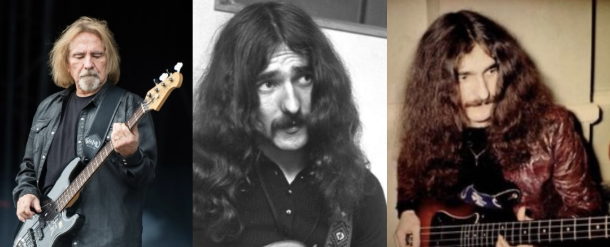

<!DOCTYPE html>
<html lang="ru">
<head>
  <meta charset="UTF-8" />
  <title>Сайт с музыкой</title>
  <meta name="viewport" content="width=device-width, initial-scale=1.0">
  <style>
    body {
      font-size: 18px;
      margin: 0;
      padding: 0;
    }

    @media (max-width: 768px) {
      body {
        font-size: 16px;
        padding: 10px;
      }

      img {
        width: 100%;
        height: auto;
      }

      .container {
        flex-direction: column;
      }
    }
  </style>
</head>
<body>
  <!-- Контент сайта -->
</body>
</html>
</head>
 <!-- Аудио -->
  <audio id="bg-music" loop>
    <source src="music.mp3" type="audio/mpeg">
  </audio>

  <script>
    // Автовоспроизведение с разрешения пользователя
    document.addEventListener("DOMContentLoaded", function() {
      const audio = document.getElementById("bg-music");
audio.volume = 0.01; // громкость от 0.0 (тихо) до 1.0 (максимум)

      // Попробуем проиграть как только пользователь кликнет по странице
      function startMusic() {
        audio.play().then(() => {
          console.log("Музыка запущена");
        }).catch(err => {
          console.log("Автозапуск заблокирован. Ждём взаимодействия...");
        });
      }

      // Событие первого клика
      document.body.addEventListener("click", () => {
        startMusic();
      }, { once: true });
    });
  </script>
</body>
</html>

  <title>Лучшие басcисты</title>
<style>
    body {
      background-color: black; /* фон всей страницы */
      color: white; /* цвет текста, чтобы его было видно на чёрном фоне */
      margin: 0;
      padding: 0;
      font-family: Arial, sans-serif;
    }

    header {
      text-align: center; /* выравнивание содержимого (в данном случае — картинки) по центру */
      padding: 20px;
    }

    img {
      max-width: 100%;
      height: auto;
    }
  </style>
</head>
<body>   
    <!-- Основной сайт -->
  <div class="main-content">
  <header>
    <!-- Вместо заголовка вставляем картинку -->
    
    <h1>погнали</h1>
    <style>
        @keyframes glow {
        0%, 100% { text-shadow: 0 0 5px #9db9cc; color: #a996ac; }
        50% { text-shadow: 0 0 20px #ffffff; color: #d7c2e4; }
      }
      .glow {
        animation: glow 2s infinite;
      }
      h1 {
        animation: glow 2s infinite;
        color: #ff6666;
      }
    </style>
  </header>
  <style>
    p {
        font-size: 24px;
        color: purple;
    }
</style> 
</head>
<body>
<main>
<p style="font-size: 53px; color: purple;">1.BILLI SHEEHAN</p>
<p style="font-size: 29px; color: rgb(62, 61, 62);">19 марта 1953, Баффало, штат Нью-Йорк, США</p>

    <p style="font-size: 30px; color: rgb(132, 88, 132);">Бас как у сумасшедшего инженера</p>

    <p style="font-size: 30px; color: rgb(132, 88, 132);">Его фирменный бас “The Wife” он сам модифицировал — добавил второй звукосниматель, переключатели, два выхода и сделал из него зверя. Именно на его базе Yamaha создала легендарный Attitude.
    </p>
    <p style="font-size: 30px; color: rgb(132, 88, 132);">Играл как гитарист — но на басу</p>
    
    <p style="font-size: 30px; color: rgb(132, 88, 132);">Шихан первым вывел бас на уровень солирующего инструмента: двухручный таппинг, аккорды, свипы, фидбек — всё, как у гитар-героев, только на низах. <p>
  
    <p style="font-size: 30px; color: rgb(132, 88, 132);">5-кратный «Лучший рок-басист»<p>
      <p style="font-size: 30px; color: rgb(132, 88, 132);">Пять раз подряд побеждал в Guitar Player как лучший рок-басист. Его отпечатки рук даже увековечили на RockWalk в Голливуде.</p>
    <p style="font-size: 30px; color: rgb(132, 88, 132);">Трижды отказался от Van Halen</p>
    <p style="font-size: 30px; color: rgb(132, 88, 132);">Его звали в Van Halen, но он три раза отказался — из уважения к оригинальному басисту Майклу Энтони. Уважение к музыке выше понтов.</p>
    <p style="font-size: 30px; color: rgb(132, 88, 132);">Мировые хиты с Mr. Big и David Lee Roth</p> 
    <p style="font-size: 30px; color: rgb(132, 88, 132);">Играл с David Lee Roth (экс‑Van Halen), Steve Vai и в группе Mr. Big — их хит To Be With You стал №1 в 15 странах.</p>
    <p style="font-size: 20px; color: rgb(255, 255, 255);">список групп:</p>
    <p style="font-size: 20px; color: rgb(255, 255, 255);">• Talas</p>
    <p style="font-size: 20px; color: rgb(255, 255, 255);">• David Lee Roth Band</p> 
     <p style="font-size: 20px; color: rgb(255, 255, 255);"> • Mr. Big</p>
     <p style="font-size: 20px; color: rgb(255, 255, 255);"> • Niacin</p>
     <p style="font-size: 20px; color: rgb(255, 255, 255);"> • Steve Vai Band</p>
     <p style="font-size: 20px; color: rgb(255,255,255);"> • The Winery Dogs</p>
     <p style="font-size: 20px; color: rgb(255,255,255);"> • Sons of Apollo</p>
     <p style="font-size: 20px; color: rgb(255,255,255);"> • UFO</p>
      
</body>
</html>
<p style="font-size: 30px; color: rgb(255, 255, 255);"> ссылка на солло </p>
<a href="https://youtu.be/30YT0cG2EkE?si=wvZab0eeP-Dq1QmL"<p style="font-size: 30px; color: rgb(255, 255, 255);">Watch this video on YouTube</p></a>
</style> 
</head>
<body>
<main>
<p style="font-size: 53px; color: rgb(0, 115, 128);">2.JOHN PAUL JONES</p>
<p style="font-size: 29px; color: rgb(62, 61, 62);">3 января 1946, Сидкап, графство Кент, Англия</p>

    <p style="font-size: 30px; color: rgb(61, 107, 112);">человеке, без которого Led Zeppelin не звучали бы так, как мы их знаем</p>


    <p style="font-size: 30px; color: rgb(61, 107, 112);">мастер тени и глубины рок-музыки. Басист, клавишник, аранжировщик и настоящий музыкальный мозг за многими легендарными треками.<p>
    
      <p style="font-size: 30px; color: rgb(61, 107, 112) ;">Настоящее имя: Джон Болдуин (John Baldwin).
        Вундеркинд студийной сцены: До Led Zeppelin он работал с The Rolling Stones, Donovan, Dusty Springfield и многими другими как сессионный музыкант и аранжировщик.</p>
    
  

    <p style="font-size: 30px; color: rgb(61, 107, 112);">Академический подход: Получил классическое музыкальное образование, благодаря чему привнёс в рок джазовые, фолковые и барочные элементы.</p>
    

    <p style="font-size: 30px; color: rgb(61, 107, 112);">Создатель мощи Led Zeppelin: Его басовые линии и клавиши создавали фундамент треков вроде “No Quarter”, “Ramble On”, “Trampled Under Foot”.</p>
    
  

    <p style="font-size: 30px; color: rgb(61, 107, 112);">Гений аранжировок: Именно он писал струнные и духовые партии для треков Led Zeppelin.
      Мастер невидимого влияния: В отличие от Пейджа, Планта и Бонэма, Джонс редко был в центре внимания, но его вклад был технически сложнейшим и незаменимым.</p> 


    <p style="font-size: 30px; color: rgb(61, 107, 112);">Мультиинструменталист: Играет не только на басу и клавишах, но и на мандолине, органе, виолончели и даже блокфлейте. </p>

    <p style="font-size: 30px; color: rgb(61, 107, 112);">Скромный и сосредоточенный: Он никогда не стремился к славе, и это делает его ещё более легендарным.</p>
    <p style="font-size: 20px; color: rgb(255, 255, 255);">список групп:</p>
    <p style="font-size: 20px; color: rgb(255, 255, 255);">• Led Zeppelin</p>
    <p style="font-size: 20px; color: rgb(255, 255, 255);">• Them Crooked Vultures </p>
     <p style="font-size: 20px; color: rgb(255, 255, 255);">• The Shadows </p>
     <p style="font-size: 20px; color: rgb(255, 255, 255);">• The Deltas </p>
     <p style="font-size: 20px; color: rgb(255, 255, 255);">• The Crusaders </p>
     <p style="font-size: 20px; color: rgb(255,255,255);">• Dusty Springfield Band </p>
      
<p style="font-size: 30px; color: rgb(255, 255, 255);"> ссылка на солло </p>
<a href="https://youtu.be/PeBNMwDlz7Y?si=JVXZkM77Pm9Hpham"<p style="font-size: 30px; color: rgb(255, 255, 255);">Watch this video on YouTube</p></a>
<main>
  <p style="font-size: 53px; color: rgb(132, 4, 4);">3.STEVE HARRIS</p>
  <p style="font-size: 29px; color: rgb(62, 61, 62);">12 марта 1956 Лейтонстон, восточный Лондон, Англия.</p>
  
  <p style="font-size: 30px; color: rgb(111, 77, 53);">Основатель и единственный участник группы Iron Maiden, присутствующий на всех её альбомах с 1975 года и по сей день.</p>
  <p style="font-size: 30px; color: rgb(111, 77, 53);">Автор фирменного «галопирующего» бас‑стиля: короткий восьмёрка + две шестнадцатых, как в “The Trooper” и “Run to the Hills”</p>
  <p style="font-size: 30px; color: rgb(111, 77, 53);">Совершенно самоучка: первая бас‑гитара — копия Fender Precision за £40, купленная в 1971 году.</p>
    <p style="font-size: 30px; color: rgb(111, 77, 53);">До музыки мечтал стать футболистом, тренировался в «West Ham United», и до сих пор носит эмблему клуба на своей бас‑гитаре</p>
      <p style="font-size: 30px; color: rgb(111, 77, 53);">Исполняет множество ролей: басист, клавишник, бэк‑вокал, автор текстов, продюсер, режиссёр и монтажёр живых видео, а также оператор синтезаторов.</p>
      <p style="font-size: 30px; color: rgb(111, 77, 53);">Steve Harris — не просто басист, а движущая сила Iron Maiden: автор, лидер, технический гений и источник вдохновения для миллионов. Его «галоп» — одна из самых узнаваемых техник в хэви‑метале.</p>
      
      <p style="font-size: 20px; color: rgb(255, 255, 255);">список групп:</p>
      <p style="font-size: 20px; color: rgb(255, 255, 255);">• Iron Maiden</p>
      <p style="font-size: 20px; color: rgb(255, 255, 255);">• British Lion </p>
       
        
  <p style="font-size: 30px; color: rgb(255, 255, 255);"> ссылка на TOP 10 STEVE HARRIS BEST MOMENTS - IRON MAIDEN </p>
  <a href="https://youtu.be/Uxnj1NV-pj8?si=VWZTZUDw5Zr5c3QX"<p style="font-size: 30px; color: rgb(255, 255, 255);">Watch this video on YouTube</p></a>
  <main>
    <p style="font-size: 53px; color: rgb(203, 26, 162);">4.JOHN ENTWISTLE</p>
  <p style="font-size: 29px; color: rgb(62, 61, 62);">9 октября 1944 Хаммерсмите Лондон. - 27 июня 2002 Paradise, Невада, США, номер 658 отеля Hard Rock Hotel & Casino </p>
  
  <p style="font-size: 30px; color: rgb(106, 68, 91);">Прозвище The Ox, Thunderfingers, The Quiet One — благодаря умению молниеносно пробегать пальцами по струнам и спокойному виду.</p>
  <p style="font-size: 30px; color: rgb(106, 68, 91);">Единственный участник The Who с формальным музыкальным образованием — играл на французском рожке и трубе в молодости</p>
  <p style="font-size: 30px; color: rgb(106, 68, 91);">Пионер lead‑басс‑стиля: тянущиеся мелодичные линии в высоком регистре и «пиковый» звук с ярко выраженной серединой и верхами</p>
  <p style="font-size: 30px; color: rgb(106, 68, 91);">Автор известных песен The Who: “My Wife”, “Boris the Spider”, “Cousin Kevin”, “Heaven and Hell” и других</p>
  <p style="font-size: 30px; color: rgb(106, 68, 91);">Первый рок‑басист с бас‑соло на пластинке — в «My Generation» (1965)</p>
  <p style="font-size: 30px; color: rgb(106, 68, 91);">Изобрёл технику би‑ампинга: раздельная обработка низких и верхних частот</p>
  <p style="font-size: 30px; color: rgb(106, 68, 91);">Признан одним из величайших бас‑гитаристов всех времён — 3‑е место в рейтинге Rolling Stone в 2020</p>
    <p style="font-size: 30px; color: rgb(106, 68, 91);">Выпустил свой первый сольник («Smash Your Head Against the Wall») в 1971, став первым из участников The Who с сольным альбомом</p>

      <p style="font-size: 20px; color: rgb(255, 255, 255);">список групп:</p>
      <p style="font-size: 20px; color: rgb(255, 255, 255);">• The Who</p>
      <p style="font-size: 20px; color: rgb(255, 255, 255);">• Ringo Starr & His All-Starr Band</p>
      <p style="font-size: 20px; color: rgb(255, 255, 255);">• The Best</p>
        
  <p style="font-size: 30px; color: rgb(255, 255, 255);"> ссылка на солло </p>
  <a href="https://youtu.be/TgCID2o9iho?si=AZYA4a-QyjV-Cuyu"<p style="font-size: 30px; color: rgb(255, 255, 255);">Watch this video on YouTube</p></a>
  <main>
    <p style="font-size: 53px; color: rgb(238, 113, 11);">5.TREVOR BOLDER</p>
    <p style="font-size: 29px; color: rgb(62, 61, 62);">9 июня 1950 Кингстон-апон-Халл, Англия - 21 мая 2013 Коттингем, Англия </p>
    
    <p style="font-size: 30px; color: rgb(125, 95, 46);">Был басистом Дэвида Боуи в его легендарной группе The Spiders from Mars.</p>
    <p style="font-size: 30px; color: rgb(125, 95, 46);">Участвовал в записи классических альбомов, включая “Ziggy Stardust”.</p>
    <p style="font-size: 30px; color: rgb(125, 95, 46);">Более 30 лет был участником Uriah Heep, где не только играл на басу, но и писал песни, пел.</p>
    <p style="font-size: 30px; color: rgb(125, 95, 46);">Сначала играл на трубе, а на бас-гитару перешёл позже.</p>
    <p style="font-size: 30px; color: rgb(125, 95, 46);">Стал важной фигурой в британском роке 70-х и 80-х.</p>
    <p style="font-size: 30px; color: rgb(125, 95, 46);">Он заменил Джона Уэттона в Uriah Heep — другого легендарного басиста (из King Crimson и Asia). Это было признание его мастерства.</p>
    <p style="font-size: 30px; color: rgb(125, 95, 46);">Сыграл на сцене с Боуи в культовом выступлении 1973 года, когда Боуи “убил” Зигги Стардаста — это стало историей рок-музыки.</p>
    
        <p style="font-size: 20px; color: rgb(255, 255, 255);">список групп:</p>
        <p style="font-size: 20px; color: rgb(255, 255, 255);">• Uriah Heep</p>
        <p style="font-size: 20px; color: rgb(255, 255, 255);">• The Rats </p>
        <p style="font-size: 20px; color: rgb(255, 255, 255);">• David Bowie (The Spiders from Mars)</p>
        <p style="font-size: 20px; color: rgb(255, 255, 255);">• Wishbone Ash </p> 
          
          <p style="font-size: 30px; color: rgb(255, 255, 255);"> ссылка на фрагмент с концерта</p>
    <a href="https://youtu.be/6PdyeYSK8ow?si=ac5Vk0KWFYu75dK4"<p style="font-size: 30px; color: rgb(255, 255, 255);">Watch this video on YouTube</p></a>
    <main>
      <p style="font-size: 53px; color: rgb(25, 169, 90);">6.ROGER DAVID GLOVER</p>
      <p style="font-size: 29px; color: rgb(62, 61, 62);">30 ноября 1945 Бреκон, Уэльс, Великобритания </p>
      
      <p style="font-size: 30px; color: rgb(43, 78, 50);">Вместе с Ian Gillan покинул группу Episode Six и присоединился к Deep Purple в 1969 году. </p>
      <p style="font-size: 30px; color: rgb(43, 78, 50);">Автор названия легендарного хита Smoke on the Water (вдохновлён сном после пожара казино в Монтрё)  .</p>
      <p style="font-size: 30px; color: rgb(43, 78, 50);">Автор названия легендарного хита Smoke on the Water (вдохновлён сном после пожара казино в Монтрё)  .</p>
      <p style="font-size: 30px; color: rgb(43, 78, 50);">Продюсировал группы Judas Priest, Nazareth, Elf, Status Quo, David Coverdale и других в 1970–1980‑х  .</p>
      <p style="font-size: 30px; color: rgb(43, 78, 50);">В 1974 выпустил сольный концептуальный альбом The Butterfly Ball and the Grasshopper’s Feast с хитом «Love Is All», популярным в Бельгии, Нидерландах и Австралии</p>
      <p style="font-size: 30px; color: rgb(43, 78, 50);">Был участником группы Rainbow с 1979 по 1984 год, не только играя, но и продюсируя альбом Down to Earth (1979)  .</p>
      <p style="font-size: 30px; color: rgb(43, 78, 50);">Вошёл в Зал славы рок‑н‑ролла в 2016 году в составе Deep Purple</p>

          <p style="font-size: 20px; color: rgb(255, 255, 255);">список групп:</p>
          <p style="font-size: 20px; color: rgb(255, 255, 255);">• Deeo Purple</p>
          <p style="font-size: 20px; color: rgb(255, 255, 255);">• Episode Six </p>
          <p style="font-size: 20px; color: rgb(255, 255, 255);">• Rainbow</p>
      
            
            <p style="font-size: 30px; color: rgb(255, 255, 255);"> ссылка на солло </p>
      <a href="https://youtu.be/AhuXa6RpuzY?si=yyjHUSUetLrGQAZ-"<p style="font-size: 30px; color: rgb(255, 255, 255);">Watch this video on YouTube</p></a>
      <main>
        <p style="font-size: 53px; color: rgb(16, 130, 116);">7.NEIL MURRAY</p>
      <p style="font-size: 29px; color: rgb(62, 61, 62);">27 августа 1950 года, Эдинбург, Шотландия </p>
      
      <p style="font-size: 30px; color: rgb(30, 92, 83);">Настоящее имя – Philip Neil Murray. Начинал как барабанщик, перешёл на бас-гитару по случайности, вдохновлялся такими мастерами, как Джек Брюс и Джон Бонэм</p>
      <p style="font-size: 30px; color: rgb(30, 92, 83);">Экспериментировал с “reverse P” конфигурацией звукоснимателей — модифицировал бас так, чтобы получить свой уникальный звук  .</p>
      <p style="font-size: 30px; color: rgb(30, 92, 83);">В ранние годы карьеры проходил через голодные времена — одна дорогостоящая бас-гитара заменялась без сожаления из-за финансовых трудностей</p>
      <p style="font-size: 30px; color: rgb(30, 92, 83);">Играет во множестве стилей: от джаз-фьюжна и прогрессива до хард‑рока и хеви‑метала</p>
      <p style="font-size: 30px; color: rgb(30, 92, 83);">Один из самых востребованных сессионных басистов своего поколения — работал с многими легендами рока и хард‑рока</p>
      <p style="font-size: 30px; color: rgb(30, 92, 83);">Гибкость и адаптивность — он легко переключается между жанрами, сохраняя свой узнаваемый звук</p>
      <p style="font-size: 30px; color: rgb(30, 92, 83);">Разработал уникальные технические решения и модификации для инструмента, что говорит о его инженерном подходе к музыке</p>
  
          <p style="font-size: 20px; color: rgb(255, 255, 255);">список групп:</p>
          <p style="font-size: 20px; color: rgb(255, 255, 255);">• Whitesnake</p>
          <p style="font-size: 20px; color: rgb(255, 255, 255);">• Black Sabbath</p>
          <p style="font-size: 20px; color: rgb(255, 255, 255);">• Colosseum II</p>
          <p style="font-size: 20px; color: rgb(255, 255, 255);">• Gary Moore Band</p>
          <p style="font-size: 20px; color: rgb(255, 255, 255);">• Brian May Band </p>

          
          <p style="font-size: 30px; color: rgb(255, 255, 255);"> ссылка на солло  </p>
    <a href="https://youtu.be/CruohregnXA?si=PhH_hucm1hGhpS-q"<p style="font-size: 30px; color: rgb(255, 255, 255);">Watch this video on YouTube</p></a>
    <main>
      <p style="font-size: 53px; color: rgb(144, 6, 6);">8.BOB DAISLEY</p>
      <p style="font-size: 29px; color: rgb(62, 61, 62);">29 декабря 1950 Сидней, Австралия </p>
      
      
      <p style="font-size: 30px; color: rgb(107, 47, 47);">Боб Дейсли — австралийский басист, который сыграл ключевую роль в формировании классического звучания хард-рока и хэви-метала.</p>
      <p style="font-size: 30px; color: rgb(107, 47, 47);">Он наиболее известен сотрудничеством с Ozzy Osbourne, записав басовые партии на таких альбомах, как Blizzard of Ozz и Diary of a Madman.</p>
      <p style="font-size: 30px; color: rgb(107, 47, 47);">Также играл с легендарной группой Rainbow, участвовал в создании альбома Down to Earth.</p>
      <p style="font-size: 30px; color: rgb(107, 47, 47);">Был участником Uriah Heep, Gary Moore Band и других влиятельных рок-коллективов.</p>
      <p style="font-size: 30px; color: rgb(107, 47, 47);">Известен своим мелодичным стилем и виртуозной техникой игры на басу, благодаря чему считается одним из лучших басистов своего времени.</p>
      <p style="font-size: 30px; color: rgb(107, 47, 47);">Несмотря на значительный вклад, долгое время оставался в тени, но признание пришло с годами.</p>                                                                                                                                                 

    <p style="font-size: 30px; color: rgb(107, 47, 47);">Его работа с Ozzy Osbourne повлияла на развитие металлического баса и стиль многих музыкантов.</p>
      <p style="font-size: 30px; color: rgb(107, 47, 47);">Часто выступал и записывался с Рэнди Роадсом — культовым гитаристом Ozzy Osbourne.</p>
      <p style="font-size: 30px; color: rgb(107, 47, 47);">Кроме баса, внес вклад в написание многих песен, что подчеркивает его творческую роль.</p>

  
          <p style="font-size: 20px; color: rgb(255, 255, 255);">список групп:</p>
          <p style="font-size: 20px; color: rgb(255, 255, 255);">• Rainbow</p>
          <p style="font-size: 20px; color: rgb(255, 255, 255);">• Ozzy Osbourne Band</p>
          <p style="font-size: 20px; color: rgb(255, 255, 255);">• Uriah Heep</p>
          <p style="font-size: 20px; color: rgb(255, 255, 255);">• The Gary Moore Band</p>
          <p style="font-size: 20px; color: rgb(255, 255, 255);">• Black Sabbath </p>

          
          <p style="font-size: 30px; color: rgb(255, 255, 255);"> ссылка на Gary Moore - After The War  </p>
    <a href="https://youtu.be/VtkM4d8zqQg?si=ik3Srb8EhDvAy3B5"<p style="font-size: 30px; color: rgb(255, 255, 255);">Watch this video on YouTube</p></a>
    <main>
      <p style="font-size: 53px; color: rgb(115, 83, 231);">9.GEEZER BUTLER </p>
      <p style="font-size: 29px; color: rgb(62, 61, 62);"> 17 июля 1949 Астон, Бирмингем, Англия</p>
      

     
      <p style="font-size: 30px; color: rgb(69, 56, 104);">Он предложил название Black Sabbath, вдохновившись фильмом ужасов 1963 года</p>
       <p style="font-size: 30px; color: rgb(69, 56, 104);">Один из первых басистов, начавших использовать wah‑wah педаль и пониженное строе (с E на C#), особенно на альбоме Master of Reality  .</p>
       <p style="font-size: 30px; color: rgb(69, 56, 104);">Именно он впервые показал на сцене жест «рогами дьявола», который позднее популяризовал Ронни Джеймс Дио  .</p>
       <p style="font-size: 30px; color: rgb(69, 56, 104);">В молодости был глубоко увлечён творчеством Алистера Кроули, что повлияло на его тексты</p>
       <p style="font-size: 30px; color: rgb(69, 56, 104);">Перед «Black Sabbath» они отрабатывали свои первые альбомы, играя по 8 часов подряд в клубе Star Club в Гамбурге  .</p>
       <p style="font-size: 30px; color: rgb(69, 56, 104);">В 2023 году официально ушёл из музыкальной карьеры после легендарной карьеры продолжительностью почти 60 лет</p>
  


      <p style="font-size: 30px; color: rgb(255, 255, 255);">список групп:</p>
          <p style="font-size: 20px; color: rgb(255, 255, 255);">• Black Sabbath</p>
          <p style="font-size: 20px; color: rgb(255, 255, 255);">• Ozzy Osbourne</p>
          <p style="font-size: 20px; color: rgb(255, 255, 255);">•GZR (g//z/r) </p>
          <p style="font-size: 20px; color: rgb(255, 255, 255);">•Geezer Butler Band</p>
          <p style="font-size: 20px; color: rgb(255, 255, 255);">•Heaven & Hell </p>
          <p style="font-size: 20px; color: rgb(255, 255, 255);">•Deadland Ritual </p>


          
          <p style="font-size: 30px; color: rgb(255, 255, 255);"> ссылка на солло </p>
    <a href="https://youtu.be/WLq2AoT5LHU?si=WCLQgpovuXfptdFA"<p style="font-size: 30px; color: rgb(255, 255, 255);">Watch this video on YouTube</p></a>
    <main>
      <p style="font-size: 53px; color: rgb(195, 58, 84);">10.GLENN HUGHES</p>
      <p style="font-size: 29px; color: rgb(62, 61, 62);">21 августа 1951 Уэймут, Дорсет, Англия</p>
      

      <p style="font-size: 30px; color: rgb(139, 74, 103);">Его часто называют «Голос Рока» за невероятно мощный, душевный и гибкий вокал.</p>
      <p style="font-size: 30px; color: rgb(139, 74, 103);">Глен Хьюз — один из немногих басистов, который также поёт ведущие вокальные партии в своих группах.</p>
      <p style="font-size: 30px; color: rgb(139, 74, 103);">Его стиль пения сочетает в себе соул, фанк, блюз и классический рок, что делает его уникальным среди рок-вокалистов.</p>
      <p style="font-size: 30px; color: rgb(139, 74, 103);">Он стал участником Deep Purple в 1973 году, заменив Роджера Гловера на басу, а также стал вторым вокалистом группы, деля вокал с Дэвидом Ковердэйлом.</p>
      <p style="font-size: 30px; color: rgb(139, 74, 103);">В 1970-х он играл в группе Trapeze, где уже проявил себя как выдающийся музыкант.</p>
      <p style="font-size: 30px; color: rgb(139, 74, 103);">Известен своей страстью к экспериментам и сотрудничеству: работал с Black Sabbath, Tommy Bolin, и участвовал в проекте Hughes/Thrall.</p>
      <p style="font-size: 30px; color: rgb(139, 74, 103);">Его борьба с зависимостями и последующий триумф над ними вдохновляет многих музыкантов и поклонников.</p>
      <p style="font-size: 30px; color: rgb(139, 74, 103);">Хьюз продолжает активно выступать и записывать альбомы, сохраняя актуальность в музыкальной индустрии спустя более 50 лет карьеры.</p>
      <p style="font-size: 30px; color: rgb(139, 74, 103);">Он мастер импровизации и часто вживую добавляет новые вокальные элементы и вариации, делая каждое выступление уникальным.</p>
      <p style="font-size: 30px; color: rgb(139, 74, 103);">В 2010-х он был одним из основателей супергруппы Black Country Communion, которая получила большую популярность.</p>

      <p style="font-size: 30px; color: rgb(255, 255, 255);">список групп:</p>
          <p style="font-size: 20px; color: rgb(255, 255, 255);">•Deep Purple </p>
          <p style="font-size: 20px; color: rgb(255, 255, 255);">•Black Sabbath</p>
          <p style="font-size: 20px; color: rgb(255, 255, 255);">•Hughes/Thrall</p>
          <p style="font-size: 20px; color: rgb(255, 255, 255);">•Black Country Communion</p>
          <p style="font-size: 20px; color: rgb(255, 255, 255);">•California Breed</p>
          <p style="font-size: 20px; color: rgb(255, 255, 255);">•The Dead Daisies</p>
          <p style="font-size: 20px; color: rgb(255, 255, 255);">•Trapeze</p>


          
          <p style="font-size: 30px; color: rgb(255, 255, 255);"> ссылка на солло </p>
    <a href="https://youtu.be/d11MN-oUgkY?si=O1FUyLm3lsy3s8o5"<p style="font-size: 30px; color: rgb(255, 255, 255);">Watch this video on YouTube</p></a>
    <main>
      
      <p style="color: rgb(137, 48, 151); font-size: 20px; text-align: center; margin-top: 50px;"> The site was created for Ivan Kovalev, a wonderful bassist and friend.</p>
      
    <main>
     